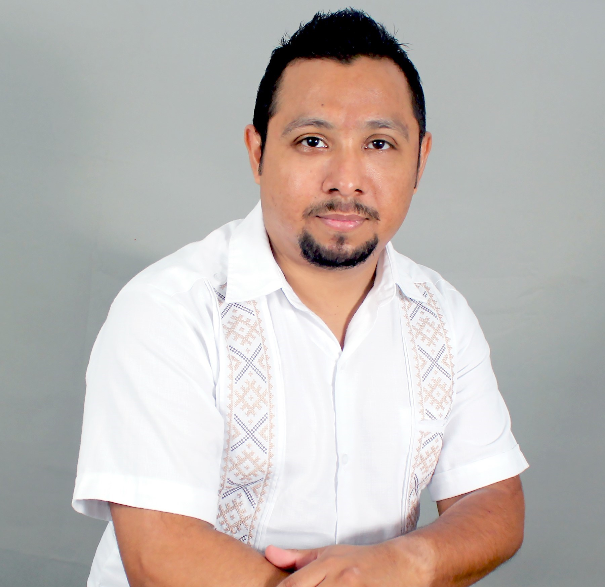

Dr. Ramón Aranda Campos
Researcher appointed at CIMAT-Mérida by CONAHCyT

Bachelor's degree in Computer Science from the Autonomous University of Yucatán, Master's degree in Science with a specialization in Computer and Industrial Mathematics, and Doctorate in Science with a focus on Computer Science from the Center for Research in Mathematics (CIMAT). I have experience in teaching courses at both undergraduate and graduate levels. Additionally, I have worked in the industry as a data scientist, undertaking various projects mostly related to data analysis and modeling from diverse sources to generate specialized algorithms for problem-solving. Consequently, owing to my scientific academic background and industry experience, I have been able to work and collaborate with multidisciplinary groups and research, particularly in the health sector alongside medical professionals, nutritionists, marine biologists, neurobiologists, and genomics experts. Since 2019, I have been a Researcher for Mexico (CONACyT), and I am currently assigned to CIMAT-Mérida Unit conducting research in computer vision and data science applied to national issues. I am a member of the National System of Researchers, Level 1.